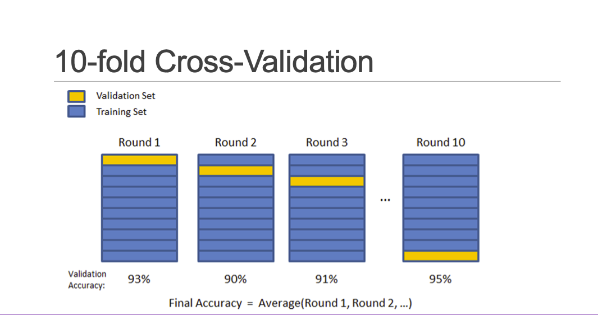
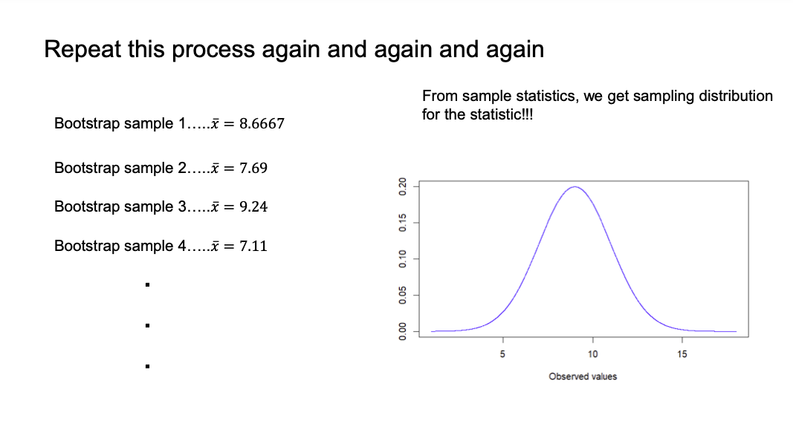
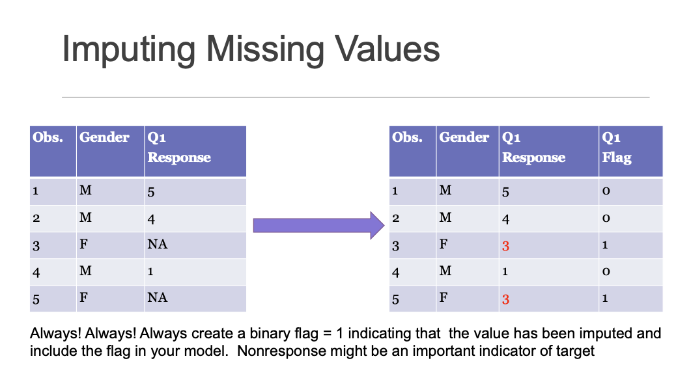

Introduction to Data Mining and Association Analysis
analytics
data mining
Author
Yang Chen
Published
September 27, 2023
1 Splitting Data
When doing a supervised technique, it is important to split the data into training, validation, and test sets. We want the model to be generalizable and predict equally well on out-of-sample data.
If we’re using an unsupervised technique like clustering analysis, it is not necessary to split the data.
How do you know when you do NOT have enough data? There are no hard rules, but it’s good to have at least 10 observations per variable.
1.1 Training / Validation
Use the training data to build your model. Evaluate and tune the model based on how it performs on the validation data (careful not to train on the validation data). Do not report accuracy measures from the training data–best to state on the test data.
Model creation should be on the training data and the applied to validation to see if you might need to enhance it. Once a final model is chosen, retrain the model on training + validation data to finalize parameters. Use this model to run on the test data.
Before deployment, you can use ALL data to update parameters.
2 K-Fold Cross Validation
Divide your data into \(k\) equally-sized folds
For each fold, train the model on all other data, using htat fold as a validation set
Record measures of error / accuracy
In the end, report summary of error / accuracy
Use that report summary to choose a model

Figure 1: 10-fold Cross Validation Example
3 Bootstrapping
Bootstrapping holds the assumption that the data we have is all the information we have for the population. The idea is to keep sampling the data with replacement and the same sample size to estimate the distribution of the quantity of interest.

Figure 2: Bootstrap Resampling
The assumptions of bootstrapping are that the samples are representative and they observations are independent.
3.1 Variability of the Median
Want to estimate the standard error of the median. We could also do this for any other statistic:
Get a bootstrap sample of the data (sample with replacement)
Calculate statistic of interest
Repeat steps 1 and 2 over and over to get the distribution of the median
If you are doing a lot of hypothesis testing, then you need to be aware of inflating your Type I error. Family-wise error rate is the same idea as we are controlling the overall probability of making a Type I error.
Bonferroni adjustment correct for this by multiplying p-values by the number of tests you are doing–these are adjusted p-values.
4.1 False Discovery Rate (FDR)
Recall that significance level, \(\alpha\), controls the Type I error rate for an individual hypothesis.
The false discovery rate controls the rate of Type I errors. This is the expected proportion of “false discoveries”.
5 Dealing with Transactional Data
Transactional data is long and has many rows per modeling observation. For example, the same person could have multiple bank deposits in the table.
Typically, the solution for modeling with transactional data is to “roll it up” so it has one row per observation modeled. We transform the data from long to wide by grouping the data.
6 Data Cleaning
6.1 Missing Values
Highly Recommend: Create a flag to indicate which values are missing and which ones are not (sometimes, missingness is informative)
Numeric: Consider how much of the variable is missing (if over 50% consider how much information this variable is giving). If you want to keep the variable, you can either impute values or bin the variables and create a separate bin for missing values.
Categorical / Ordinal: Consider creating a “bin” for missing values, but if too much is missing this can be a HUGE bin.
In any case, you have to always explore your data to see if the route you took is sensible.

Figure 3: Imputing Missing Values
7 Transformations and Standardizations
7.1 Binning Numeric Variables
7.1.1 Unsupervised Approaches
One unsupervised approach is to bin the variable based on equal-width bins. Each bin has the same width in variable values, but each bin has different number of observations.
We can also do equal depth where we take percentiles of the population and each bin has the same number of observations.
7.1.2 Supervised Approaches
We can use target variable info to “optimally” bin numeric variables for prediction. WE typically do this in classification problems.
Decision trees can also create these bins or we can use weight of evidence.
7.2 Standardization and Normalization
Standardization in statistics transform units to “number of standard deviations away from the mean” to put variables on the same scale:
\[
\frac{x - \bar{x}}{\sigma_x}
\]
There are many different ways to standardize / normalize:
Range standardization
Min-Max standardization
Divide by 2-nomr, 1-norm, divide by sum
8 Association Analysis
Association analysis looks at relationships between items. How often do we see these items occurring together?
This is an unsupervised approach as there is no target or outcome variable for training. For example, based on a set of product orders association analysis gives us sets of products that are likely to be purchased together.
In order to find these relationships, you need to have your transactional data rolled up by ID. {bread, egg, oat packet, papaya} 1
We have rules that we are focused on quantifying: Butter \(\longrightarrow\) Bread is interpreted as for those who buy butter, do they tend to also buy bread? The left hand side is the antecedent and the right hand side is the consequent.
8.1 Quantifying Association Rules
Support: \(P(A \cap B)\) measures how often we find instances of this rule in the data
Confidence: \(P(B|A) = \frac{P(A \cap B)}{P(A)}\) measures what percent of transactions containing A also contain B
Lift: \(\frac{P(B|A)}{P(B)} = \frac{P(A \cap B)}{P(A)P(B)}\) measures how much more likely we are to buy B given that we also buy A than we are to buy B at random
Want lift values greater than 1
8.2 Post-Hoc
Product A \(\longrightarrow\) Product B
Product B as a consequent helps us determine what can be done to boost its sales. Product A as an antecedent helps us determine what other products would be affected by changes to product A.
8.3 Direction of Association
Either direction has the same support and same lift, but different confidence. We do not say those who buy A will then buy B.